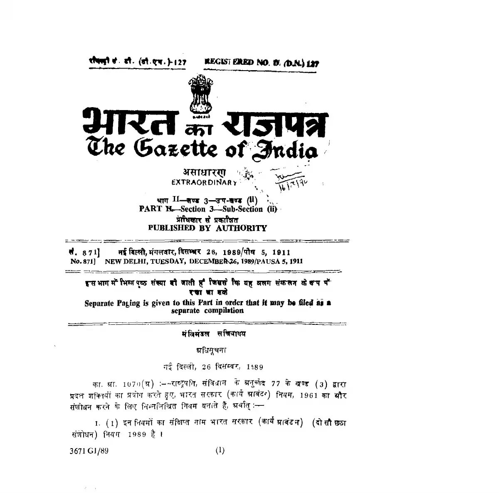
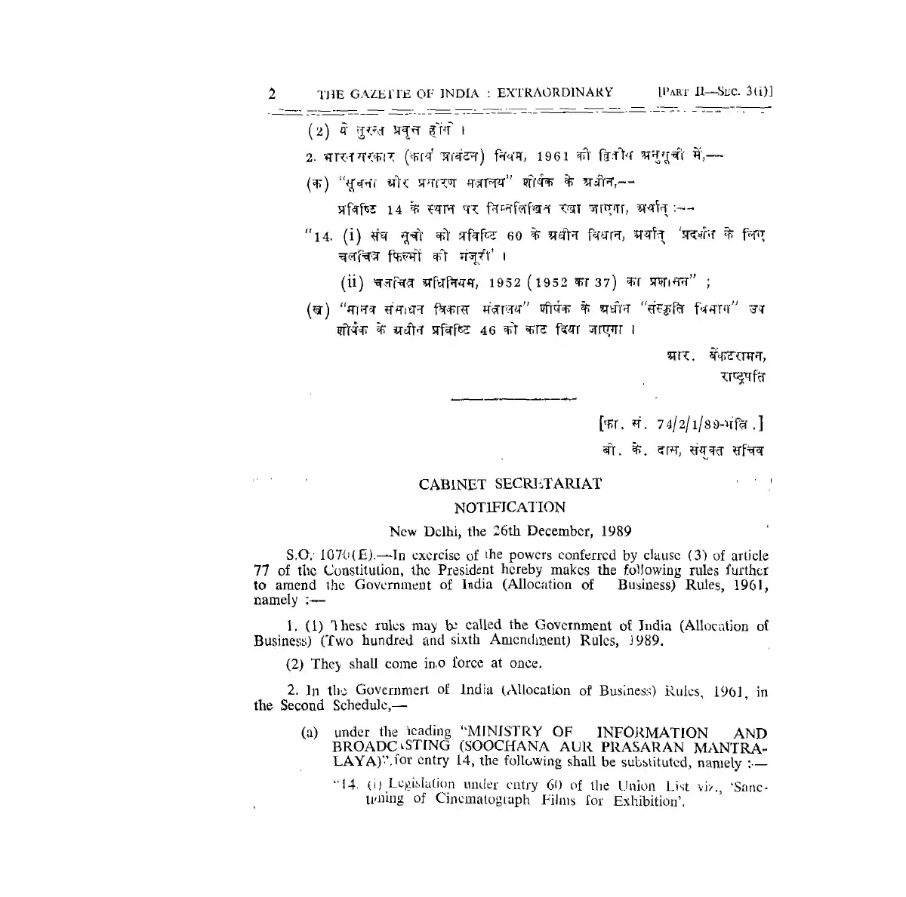
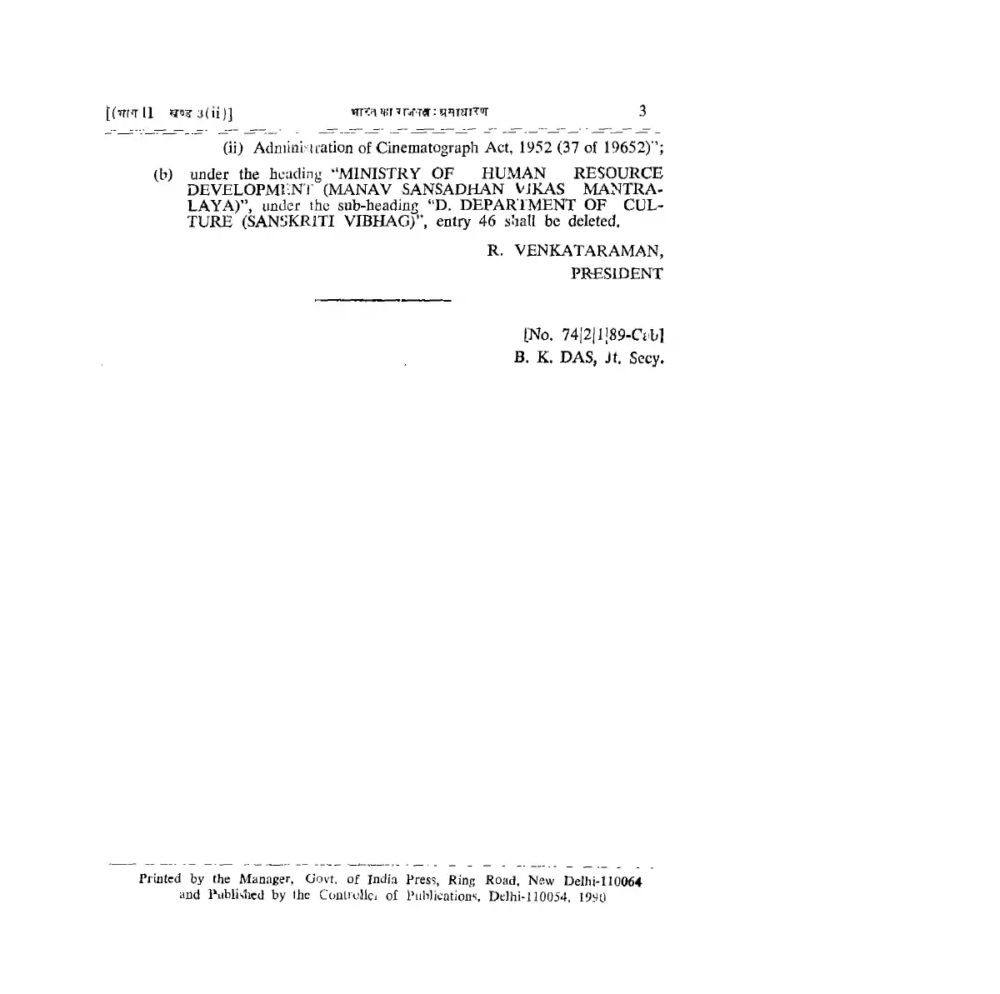

Amendment #206 (S.O. 1070(E), 1989)
2 changes: 0 to the First Schedule, 2 to the Second Schedule. 2 applied
The order, page by page
Page 1 of 4

Page 2 of 4

1Schedule 2 › MINISTRY OF INFORMATION AND BROADCASTING › entry 14
- 14.
- i. Legislation under cntry 61) of the Union List viz, Sanc - trning of Cinematograph Films for Exhibition'. 3 ----
- ii. Administration of Cinematograph Act, 1952 (37 of 19652)
applied at schedule 2 › ministry MINISTRY OF INFORMATION AND BROADCASTING › group_heading II › entry 14 in the Rules after #206
read page break
Page 3 of 4

2Schedule 2 › MINISTRY OF HUMAN RESOURCE DEVELOPMENT › DEPARTMENT OF CUL- TURE › entry 46
applied at schedule 2 › ministry MINISTRY OF HUMAN RESOURCE DEVELOP- MENT › department D › entry 46 in the Rules after #206
Page 4 of 4
How this document was read
From the Government of India (Allocation of Business) Rules, 1961 and their amendments, as published by the Cabinet Secretariat (cabsec.gov.in), read by orgpedia. The readings of the older scanned gazettes have known gaps.